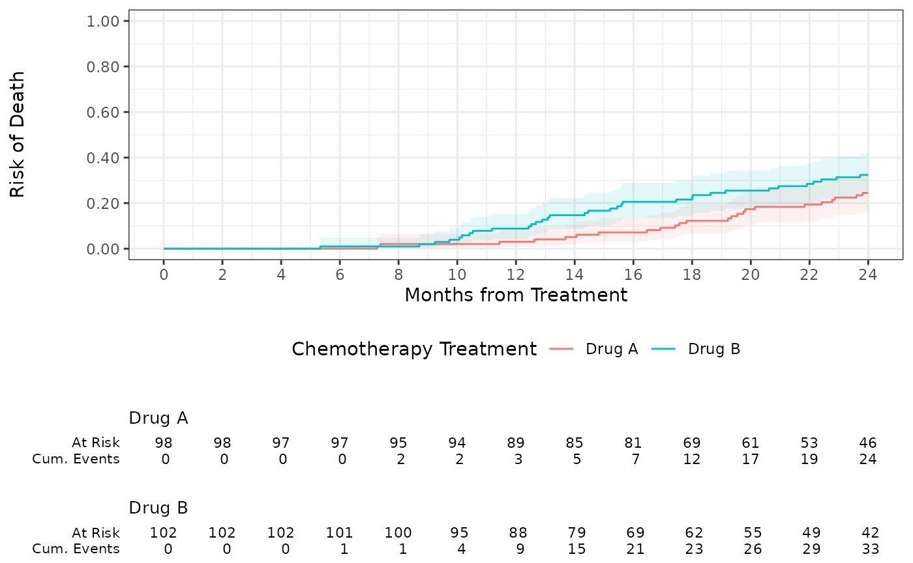

Introduction
This tutorial illustrates a typical use case in clinical development - the analysis of time to a certain event (e.g., death) in different groups. Typically, data obtained in randomized clinical trials (RCT) can be used to estimate the overall survival of patients in one group (e.g., treated with drug X) vs another group (e.g., treated with drug Y) and thus determine if there is a treatment difference.
For a more thorough introduction to Survival Analysis, we recommend the following tutorial.
In this example, we will work with patient data from NCCTG Lung
Cancer dataset that is part of the survival package.
Another vignette presents an example using a data set following the CDISC
ADaM standard.
Global Document Setup
# Metadata Title
DATASET <- paste0("NCCTG Lung Cancer Dataset (from survival package ",
packageVersion("survival"), ")")
# Save original options()
old <- options()
# Global formatting options
options(digits = 3)
# Global ggplot settings
theme_set(theme_bw())
# Global table settings
options(DT.options = list(pageLength = 10,
language = list(search = 'Filter:'),
scrollX = TRUE))
lung_cohort <- survival::lung
# Change gender to be a factor and rename some variables to make output look nicer
lung_cohort <- lung_cohort %>%
dplyr::mutate(sex = as.factor(ifelse(sex == 1, "Male", "Female"))) %>%
dplyr::rename(Age = "age", Sex = "sex", Status = "status", Days = "time")
# Restore original options()
options(old)Cohort Overview (Table one)
Visualizing tables, like the table one or risk tables, is a two-step
process in visR . First, a data.frame (or tibble) is created by a
get_XXX() function (e.g. get_tableone()).
Secondly, the data.frame can be displayed by calling the function
render(). The advantage of this process is that data
summaries can be created, used and adjusted throughout an analysis,
while at every step data summaries can be displayed or even be
downloaded.
Populations are usually displayed as a so-called table one. Function
get_tableone creates a tibble that includes populations
summaries.
# Select variables of interest and change names to look nicer
lung_cohort_tab1 <- lung_cohort %>%
dplyr::select(Age, Sex)
# Create a table one
tab1 <- visR::get_tableone(lung_cohort_tab1)
#> Warning: There was 1 warning in `summarise()`.
#> ℹ In argument: `Sex = (function (x) ...`.
#> ℹ In group 1: `all = "Total"`.
#> Caused by warning:
#> ! `fct_explicit_na()` was deprecated in forcats 1.0.0.
#> ℹ Please use `fct_na_value_to_level()` instead.
#> ℹ The deprecated feature was likely used in the visR package.
#> Please report the issue at <https://github.com/openpharma/visR/issues>.
# Render the tableone
visR::render(tab1, title = "Overview over Lung Cancer patients", datasource = DATASET)| Overview over Lung Cancer patients | |
| Total (N=228) | |
|---|---|
| Age | |
| Mean (SD) | 62.4 (9.07) |
| Median (IQR) | 63 (56-69) |
| Min-max | 39-82 |
| Missing | 0 (0%) |
| Sex | |
| Female | 90 (39.5%) |
| Male | 138 (60.5%) |
| Data Source: NCCTG Lung Cancer Dataset (from survival package 3.5.8) | |
Function render nicely displays the tableone.
Additionally, visR includes a wrapper function to create and display a
tableone in only one function call.
# Use wrapper functionality to create and display a tableone
visR::tableone(lung_cohort_tab1, title = "Overview over Lung Cancer patients", datasource = DATASET)| Overview over Lung Cancer patients | |
| Total (N=228) | |
|---|---|
| Age | |
| Mean (SD) | 62.4 (9.07) |
| Median (IQR) | 63 (56-69) |
| Min-max | 39-82 |
| Missing | 0 (0%) |
| Sex | |
| Female | 90 (39.5%) |
| Male | 138 (60.5%) |
| Data Source: NCCTG Lung Cancer Dataset (from survival package 3.5.8) | |
Creating and visualizing a tableone with default settings is very simple and can be done with one line of code. However, there are further customization options.
In both the get and the wrapper functions, a stratifier can be defined and the column displaying total information can be removed.
# Create and render a tableone with a stratifier and without displaying the total
visR::tableone(lung_cohort_tab1, strata = "Sex", overall = FALSE,
title = "Overview over Lung Cancer patients", datasource = DATASET)| Overview over Lung Cancer patients | ||
| Female (N=90) | Male (N=138) | |
|---|---|---|
| Age | ||
| Mean (SD) | 61.1 (8.85) | 63.3 (9.14) |
| Median (IQR) | 61 (55-68) | 64 (57-70) |
| Min-max | 41-77 | 39-82 |
| Missing | 0 (0%) | 0 (0%) |
| Data Source: NCCTG Lung Cancer Dataset (from survival package 3.5.8) | ||
visR’s render supports three different rendering engines
to be as flexible as possible. By default, render uses
gt. Additional engines are datatable
(dt) to include easy downloading options…
# Create and render a tableone with with dt as an engine
visR::tableone(lung_cohort_tab1, strata = "Sex", overall = FALSE,
title = "Overview over Lung Cancer patients", datasource = DATASET,
engine = "dt")…and kable for flexible displaying in various output
formats (html by default, latex
supported).
# Create and render a tableone with with kable as an engine and html as output format
visR::tableone(lung_cohort_tab1, strata = "Sex", overall = FALSE,
title = "Overview over Lung Cancer patients", datasource = DATASET,
engine = "kable", output_format="html")| variable | statistic | Female (N=90) | Male (N=138) |
|---|---|---|---|
| Age | Mean (SD) | 61.1 (8.85) | 63.3 (9.14) |
| Median (IQR) | 61 (55-68) | 64 (57-70) | |
| Min-max | 41-77 | 39-82 | |
| Missing | 0 (0%) | 0 (0%) | |
| Additional Note: | |||
| Data Source: | |||
| NCCTG Lung Cancer Dataset (from survival package 3.5.8) |
Called with html as an output format, a
html view is displayed; called with latex a
string containing latex code is printed.
Time-to-event analysis
Survival estimation
visR provides a wrapper function to estimate a Kaplan-Meier curve and
several functions to visualize the results. This wrapper function is
compatible with %>% and purrr::map functions without
losing traceability of the dataset name.
# Select variables of interest and change names to look nicer
lung_cohort_survival <- lung_cohort %>%
dplyr::select(Age, Sex, Status, Days)
# For the survival estimate, the censor must be 0 or 1
lung_cohort_survival$Status <- lung_cohort_survival$Status - 1
# Estimate the survival curve
lung_suvival_object <- lung_cohort_survival %>%
visR::estimate_KM(strata = "Sex", CNSR = "Status", AVAL = "Days")
#> Warning: `estimate_KM()` was deprecated in visR 0.4.0.
#> ℹ Please use `ggsurvfit::ggsurvfit()` instead.
#> This warning is displayed once every 8 hours.
#> Call `lifecycle::last_lifecycle_warnings()` to see where this warning was
#> generated.
lung_suvival_object
#> Call: ~survival::survfit(formula = survival::Surv(Days, 1 - Status) ~
#> Sex, data = data)
#>
#> n events median 0.95LCL 0.95UCL
#> Sex=Female 90 37 529 376 NA
#> Sex=Male 138 26 840 806 NASurvival visualization
There are two frequently used ways to estimate time-to-event data: As a risk table and as a Kaplan-Meier curve. In principle, visR allows to either visualize a risk table and a Kaplan-Meier curve separately, or both together in one plot.
Displaying the risktable
Creating and visualizing a risk table separately works in the exact
same way as for the tableone (above): First,
get_risktable() creates a tibble with risk information that
can still be changed. Secondly, the risk table can be rendered to be
displayed.
# Create a risktable
rt <- visR::get_risktable(lung_suvival_object)
# Display the risktable
visR::render(rt, title = "Overview over survival rates of Lung Cancer patients", datasource = DATASET)| Overview over survival rates of Lung Cancer patients | ||||||||||||
| 0 | 100 | 200 | 300 | 400 | 500 | 600 | 700 | 800 | 900 | 1000 | 1100 | |
|---|---|---|---|---|---|---|---|---|---|---|---|---|
| Female | ||||||||||||
| At risk | 90.00 | 82.00 | 66.00 | 43.00 | 26.00 | 21.00 | 11.00 | 8.00 | 2.00 | 1.00 | 0.00 | 0.00 |
| Male | ||||||||||||
| At risk | 138.00 | 114.00 | 78.00 | 49.00 | 31.00 | 20.00 | 13.00 | 8.00 | 6.00 | 2.00 | 2.00 | 0.00 |
| Data Source: NCCTG Lung Cancer Dataset (from survival package 3.5.8) | ||||||||||||
The risktable is only one piece of information that can be extracted
from a survival object with a get_XXX to then be
rendered.
# Display a summary of the survival estimate
visR::render(lung_suvival_object %>% visR::get_summary(), title = "Summary", datasource = DATASET)| Summary | ||||||
| strata | No. of subjects | No. of events | Median(surv.time) | 0.95LCL | 0.95UCL | 0.95CI |
|---|---|---|---|---|---|---|
| Sex=Female | 90.00 | 37.00 | 529.00 | 376.00 | NA | (376;NA) |
| Sex=Male | 138.00 | 26.00 | 840.00 | 806.00 | NA | (806;NA) |
| Data Source: NCCTG Lung Cancer Dataset (from survival package 3.5.8) | ||||||
# Display test statistics associated with the survival estimate
visR::render(lung_suvival_object %>% visR::get_pvalue(), title = "P-values", datasource = DATASET)| P-values | |||
| Equality across strata | Chisq | df | p-value |
|---|---|---|---|
| Log-Rank | 6.229 | 1.00 | 0.013 |
| Wilcoxon | 4.650 | 1.00 | 0.031 |
| Tarone-Ware | 4.070 | 1.00 | 0.044 |
| Data Source: NCCTG Lung Cancer Dataset (from survival package 3.5.8) | |||
# Display qunatile information of the survival estimate
visR::render(lung_suvival_object %>% visR::get_quantile(), title = "Quantile Information", datasource = DATASET)| Quantile Information | ||||
| strata | quantity | 25 | 50 | 75 |
|---|---|---|---|---|
| Sex=Female | lower | 243.00 | 376.00 | 588.00 |
| Sex=Female | quantile | 276.00 | 529.00 | 821.00 |
| Sex=Female | upper | 376.00 | NA | NA |
| Sex=Male | lower | 284.00 | 806.00 | 840.00 |
| Sex=Male | quantile | 404.00 | 840.00 | 1,010.00 |
| Sex=Male | upper | NA | NA | NA |
| Data Source: NCCTG Lung Cancer Dataset (from survival package 3.5.8) | ||||
# Display a cox model estimate associated with the survival estimate
visR::render(lung_suvival_object %>% visR::get_COX_HR(), title = "COX estimate", datasource = DATASET)
#> tidyme S3 default method (broom::tidy) used.| COX estimate | ||||
| term | estimate | std.error | statistic | p.value |
|---|---|---|---|---|
| SexMale | −0.65 | 0.26 | −2.45 | 0.01 |
| Data Source: NCCTG Lung Cancer Dataset (from survival package 3.5.8) | ||||
Plotting the Kaplan-Meier
Alternatively, the survival data can be plotted as a Kaplan-Meier
curve. In visR, a plot is in most cases a ggplot object and
adapting the plot follows the general principle of creating a plot and
then adding visual contents step-by-step.
# Create and display a Kaplan-Meier from the survival object
gg <- visR::visr(lung_suvival_object)
#> Warning: `visr.survfit()` was deprecated in visR 0.4.0.
#> ℹ Please use `ggsurvfit::ggsurvfit()` instead.
#> This warning is displayed once every 8 hours.
#> Call `lifecycle::last_lifecycle_warnings()` to see where this warning was
#> generated.
gg 

# Add a confidence interval and the censor ticks to the Kaplan-Meier and display the plot
gg %>% visR::add_CI() %>% visR::add_CNSR(shape = 3, size = 2)
visR includes a wrapper function to create a risktable and then add it directly to a Kaplan-Meier plot.
# Add a confidence interval and the censor ticks and a risktable to the Kaplan-Meier and display the plot
gg %>% visR::add_CI() %>% visR::add_CNSR(shape = 3, size = 2) %>% visR::add_risktable()
Competing Risks
In addition to classic right-censored data, the {visR} package supports the estimation of time-to-event outcomes in the presence of competing events. The package wraps the {tidycmprsk} package, and exports functions for cumulative incidence estimation and visualization.
The function estimate_cuminc() estimates the cumulative
incidence of the competing event or outcome of interest. The syntax is
nearly identical to estimate_KM(); however, the outcome
status variable (passed to the CNSR= argument) must be a
factor where the first level indicates censoring, the second level the
competing event of interest, and subsequent levels are the other
competing events. Visualization functions, visr(),
add_CI(), add_CNSR(), and
add_risktable() share the same syntax as the Kaplan-Meier
variants.
visR::estimate_cuminc(
tidycmprsk::trial,
strata = "trt",
CNSR = "death_cr",
AVAL = "ttdeath"
) %>%
visR::visr(
legend_position = "bottom",
x_label = "Months from Treatment",
y_label = "Risk of Death"
) %>%
visR::add_CI() %>%
visR::add_risktable(statlist = c("n.risk", "cum.event"))
#> Warning: `visr.tidycuminc()` was deprecated in visR 0.4.0.
#> ℹ Please use `ggsurvfit::ggcuminc()` instead.
#> This warning is displayed once every 8 hours.
#> Call `lifecycle::last_lifecycle_warnings()` to see where this warning was
#> generated.